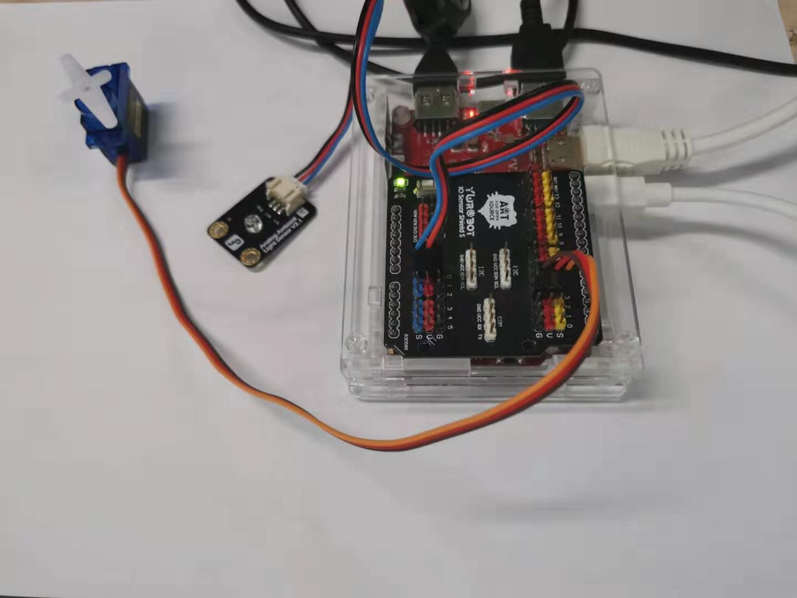
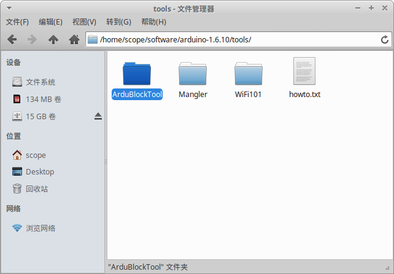
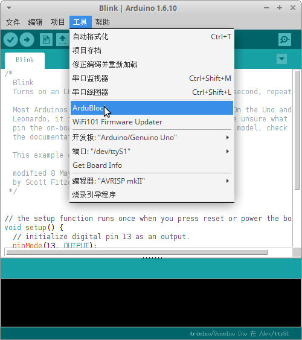

3. Arduino IDE¶
Arduino于2005年开发，起初仅为了方便设计学院的大学生设计互动作品，后来因为开源而快速发展为全球知名的开源硬件平台。Arduino包含硬件（各种型号的Arduino主板）和软件（Arduino IDE) 。虚谷号板载了Arduino UNO版本，也内置了Arduino IDE。
Arduino 语言建立在C/C++基础上，保留了C/C++的语法规范，并对Arduino主控芯片底层进行了二次封装，使开发者无需考虑芯片的底层操作，只通过编写简单的代码就可以实现对Arduino芯片的控制。

Arduino的官方网站：https://www.arduino.cc/
3.1. Arduino的代码范例¶
Arduino 语言常用于兼容Arduino的开源硬件的编程，是目前最流行的开源硬件编程语言之一。下面是Arduino读取模拟接口并打印的示例代码。
void setup() { //初始化函数，只在上电时运行一次 Serial.begin(9600); //设置串口通信波特率，启动串口通信 } void loop() { //循环函数，在初始化函数之后一直循环运行 int sensorValue = analogRead(A0);//设置变量，变量值为模拟口A0的输入 Serial.println(sensorValue); //通过串口打印变量sensorValue 的值 delay(1); //延时1毫秒 }
3.2. 连接扩展模块¶
虚谷号兼容Arduino UNO的扩展板，利用扩展板就能轻易接上常见的Arduino扩展模块，如各种传感器、LED灯、舵机等。
如图所示，虚谷号插上Arduino UNO的普通扩展板，接上一个光线传感器和舵机。
3.3. 安装ArduBlock¶
ArduBlock是Arduino IDE的可视化编程插件，是最受欢迎的Arduino编程入门工具之一。ArduBlock最初版本由上海新车间开发，后来谢作如老师团队委托著名创客何琪辰，在其基础上更新了教育版，目前由无锡一中的张禄老师维护。
虚谷号教育版已经预装了ArduBlock，创客版需要自行安装。安装步骤如下：
（1）关闭所有的Arduino IDE窗口。
（2）/home/scope/software下面有个ArduBlockTool文件，将此文件拷贝到/home/scope/software/arduino-1.6.10/tools/下，如下图所示：
（3）重新打开Arduino IDE，在工具中可以看到ArduBlock如下图所示。
注：此功能添加会影响Arduino IDE和Arduino IDE里面的示例打开的速度。感谢DF的工程师李亮提供了安装教程。